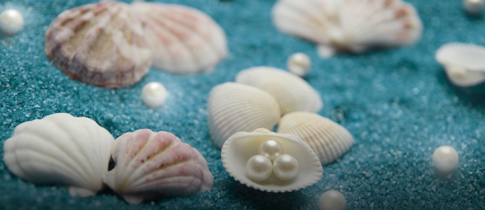

Dubai's Transition from a Fishing Town to a Futuristic City
It is believed that the first set of people to settle in Dubai were bronze age nomadic cattle headers,
who migrated to the area after the mangrove swamp that occupied it dried up (Visit Dubai, 2024).
They started nuturing lands for agriculture but mainly palm plantations (Things to do in Dubai, 2021).

The Al Maktoum dynasty, that still govern Dubai, declared the city's independence from Abu Dhabi in the year 1833.
Dubai's economy was thriving with fishing, trading and pearl diving for a few centuries,
but it was threathened when the production of artificial perals started in Japan in the 1950s (Visit Dubai, 2024).
Dubai found oil in 1966, which meant the economic recession was no more.
With this incredible discovery, the Sheik at the time, who always had big plans for Dubai,
began the construction of this modern day metropolis.
Some of the significant projects finished at that period were the Dubai World Trade Center,
Dubai Drydocks, and the enlargement of Dubai Creek (Visit Dubai, 2024).
The Dubai World Trade Center, was the first skycraper completed in the city by the year 1978 (Bedirian, 2023).
In the next five decades,
Dubai had completed some of most cutting edge architecture the world had ever seen (Visit Dubai, 2024).
In this image, one can see the new developments in the are surrounding area of the World Trade Center
For more on Dubai's history, visit the City's official tourism site here